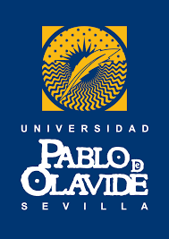

Educación
-
Máster en Ingeniería Web (2022-Presente)
Universidad de Oviedo
-
Máster en Análisis Bioinformatico Avanzado (2018-2020)
Universidad Pablo de Olavide
 -
Máster en Biotecnología Avanzada (2014-2015)
Universidad de Málaga
-
Licenciado en Biología (2005-2012)
Universidad de Granada
Exp. Laboral
-
Full Stack Developer (2018-Presente)
Treelogic
Desarrollador Full Stack (Java, Angular, Spring, JHipster) en distintos proyectos entre los que desatacan: Hercules: Infraestructura semántica basada en el paradigma de datos abiertos para la gestión de investigación de las universidades Españolas. Triaje-SET: software de ayuda inteligente al triaje tanto para adultos como pediátrico, evaluado y validado, con ayuda continua y con registro anamnésico. SEPSIS SW: herramienta cuyo objetivo es ayudar a disminuir la incidencia de la SEPSIS, gracias a una eficaz detección precoz y un adecuado manejo post-detección. SERIF: familia de soluciones de detección, análisis e investigación de fraude en seguros que, mediante el uso de tecnologías de Big Data y Data Science, permite analizar grandes volúmenes de datos optimizando los resultados. iTrack: Sistema integrado de seguimiento en tiempo real e inteligencia colectiva en misiones humanitarias civiles.
-
Developer (2017-2018)
Future Space
DevOp en tareas de mantenimiento y desarrollo de aplicación web (Portal del Mediador) basada en Java (Spring Framework), Liferay, Freemarker y JQuery para la compañía Caser Seguros.
-
Developer (2017-2017)
Kantar Health
Creación de Dashboards interactivos.Análisis y tratamiento de bases de datos.Diseño gráfico, visualización de datos.
-
Desarrollador Apps móviles (2015-2017)
Fundación Telefónica
Metodologías de programación. Arquitectura de aplicaciones. Diseño web con HTML, CSS y JavaScript. PhoneGap. BBDD y MySQL.Metodologías ágiles. Programación Java. Programación de aplicaciones Android. Programación de aplicaciones iOS.